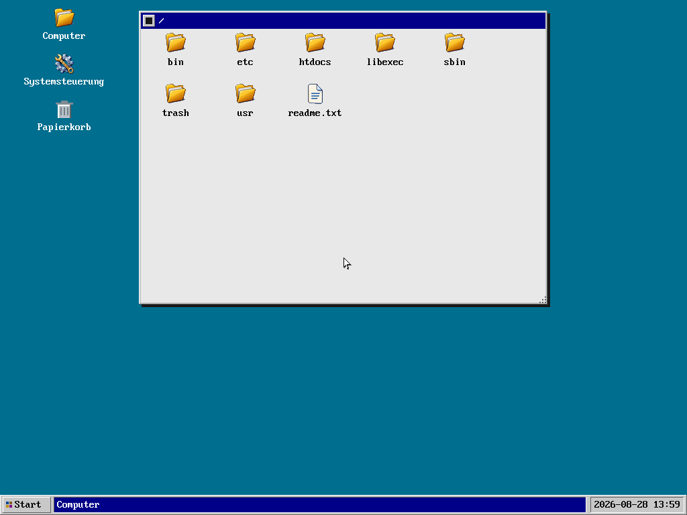
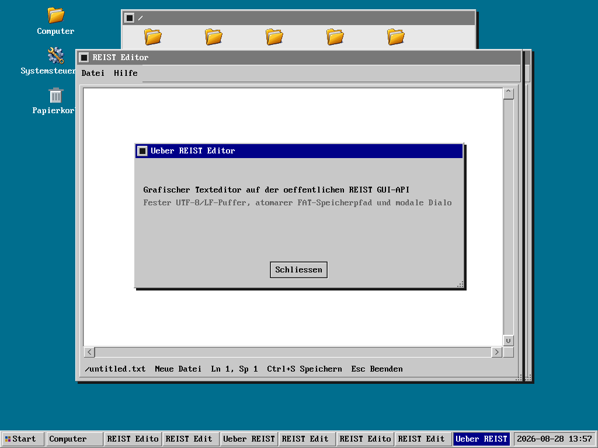

Erkennen
Deadlines, Integritätsprüfungen und überwachte Dienste machen Fehler sichtbar.
Begrenzt · fail-closed · beobachtbar
REIST-OS ist ein kompaktes x86-Forschungsbetriebssystem. Das produktive i386-System erkennt Fehler, begrenzt ihre Wirkung und validiert Recovery; ein getrenntes x86_64-Bootstrap belegt inzwischen die Migrationsgrundlagen bis zur generationengebundenen FIFO-Ausführung.
[boot] Kernel-CRC32 bestätigt
[storage] AHCI-Controller bereit
BOOT_OK
RESOURCE_QUARANTINED 0
Medienidentität bestätigt
Undo-Journal wiederhergestellt
Storage-Fence freigegeben
RESOURCE_REINTEGRATED_RW 0
C:\>_
Engineering-Prinzipien
Jeder kritische Pfad basiert auf expliziten Grenzen, geschütztem Zustand und belegbarer Recovery.
Deadlines, Integritätsprüfungen und überwachte Dienste machen Fehler sichtbar.
Ring-3-Domänen, generationsgebundene Handles und Output-Fences begrenzen Autorität.
Transaktionaler Storage und begrenzte Neustartpfade vermeiden blinde Wiederholungen.
Frische Reads, Identitätsprüfung, CRC und Selbsttests prüfen das Resultat.
Schreibzugriff kehrt erst zurück, wenn jedes Recovery-Gate erfolgreich war.
Build-IDs und Failure Context machen Hardwaretests zu verwertbarer Evidenz.
Systemarchitektur
Storage-Lebenszyklus
Die aktuellen Ring-3-Werkzeuge decken die Einrichtung leerer Datenträger, begrenzte Administration und Rescue-Ausführung ab; der Kernel behält die Autorität über jeden Zustandsübergang.
fdisk erstellt ausgerichtete MBR-Partitionen auf leeren Datenträgern. format bietet verifiziertes REIST-FAT32-Quickformat und einen begrenzten Vollscan, der defekte Datencluster sperrt.
devctl, mount und umount stellen explizite Down-/Up- und Dateisystemoperationen mit Root-Schutz, Deadlines und erneuter Medienqualifikation bereit.
Integritätsgeprüfte Rescue-Werkzeuge bleiben nach Verlust des Root-Storage ausführbar. Systemprogramme nutzen eine kleingeschriebene /bin-, /sbin- und /libexec/reist-Hierarchie; die Shell bietet Command-History mit Cursornavigation.
Verifizierter Projektstatus
REIST bootet über einen eigenen BIOS-/MBR-Pfad, startet isolierte Userspace-Programme sowie überwachte GUI-, Audio- und Storage-Komponenten und stellt das Kernel-Log über dmesg bereit. Der Desktop startet nur nach einem ausdrücklichen Shell-Befehl, damit Bootdiagnosen sichtbar bleiben.
Forschungsumfang: REIST-OS ist nicht zertifiziert und beansprucht keine allgemeine Fail-operational- oder Safety-Eignung.
dmesg auf Hardware bestätigtKI-Transparenz
REIST-OS wird mit agentischer KI-Unterstützung entwickelt, um Implementierung, Tests, Dokumentation und wiederholbare Prüfungen so weit wie verantwortbar zu automatisieren. Diese Nutzung wird offengelegt, damit Herkunft und Prüfweg von Änderungen nachvollziehbar bleiben.
Die KI entwickelt REIST-OS nicht unkontrolliert und vollautomatisch.
Direkt aus QEMU aufgenommen
Dies sind abgenommene Aufnahmen realer REIST-OS-Gastläufe. Sie dokumentieren den produktiven i386-Pfad; die neuere x86_64-Arbeit wird bewusst durch Testevidenz statt durch ein synthetisches Desktopbild dargestellt.


SYSINFO identifiziert das aktuelle i386-Ring-3-System; x86_64 bleibt ein getrennt abgenommenes Bootstrap.

Bauen und starten
Der Windows-Build erzeugt ein Raw-BIOS-Image, ein Diskettenimage und ein startfertiges VMware-Paket.
.\scripts\build-windows.ps1 -Target real_hwAusgabe: build\reist-os.img
REIST-OS
Quellcode, Tests, Architekturverträge und ausführbare Roadmap liegen gemeinsam vor.